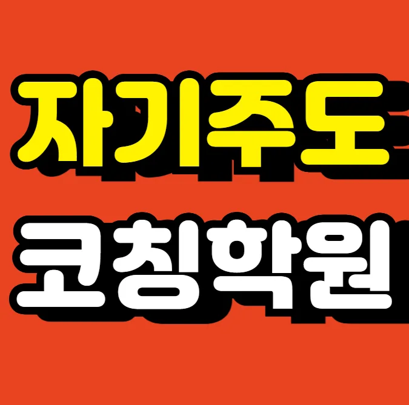

첫 번째로 위치 접근성을 확인해 보는 것이 중요해요. 가까운 거리이면 통학 시간 절약은 물론 부모님도 안심할 수 있거든요. 두 번째로 강사진의 경력과 전공을 살펴보는 것이 도움이 돼요. 현직 교사 출신이거나 전문 강사라면 최신 교육 트렌드와 시험 대비 노하우를 전달할 가능성이 높아요. 세 번째로 율하동 고등학생 영수학원 규모와 수업 인원을 체크해 보세요. 소규모 반이면 개인 맞춤 피드백이 활발히 이뤄지고, 대규모 반이면 경쟁 분위기가 조성돼 학습 동기가 상승할 수 있어요. 네 번째로 커리큘럼 구성 방식을 살펴보면, 기본 개념부터 심화까지 단계적으로 설계된 프로그램이 장기적인 성장을 돕는다는 점을 기억하면 좋겠어요. 마지막으로 학부모 후기와 졸업생 성과를 비교해 보면 실제 효과를 가늠할 수 있는 좋은 지표가 되니 참고해 보세요.
각 학년마다 학습 목표와 교과 과정이 다르기 때문에 맞춤형 접근이 필요해요. 초등 저학년은 기본 개념을 시각화하고 짧은 시간 내에 복습할 수 있는 방법이 효과적이라고 해요. 초등 고학년은 문제 해결 능력을 키우기 위해 단계별 풀이와 시간 관리 전략을 강조해요. 중학생은 교과서 중심의 심화 학습과 함께 실전 모의고사를 통해 시험 감각을 익히는 것이 중요해요. 고등학생은 진학 목표에 따라 선택 과목 심화와 입시 전략을 함께 설계해요. 전체 학년은 시험 대비라는 말이 이렇게 섬세할 수 있구나 싶을 정도로 각 과목별 핵심 포인트를 정리하고 반복 학습을 권장해요.
와와학습코칭센터는 기본 개념을 철저히 검토한 뒤 단계별 난이도로 확장하는 수업 방식을 채택하고 있어요. 주 대상은 초등 저학년부터 고등학생까지이며, 각 연령대에 맞춘 맞춤형 커리큘럼을 제공해요. 예를 들어 수학 초등 A 과정은 150,000원, 초등 B 과정은 190,000원이라는 가격대로 운영되는데, 이는 학습 내용과 교재 수준을 고려한 합리적인 책정이라고 할 수 있어요. 강사는 현직 교사 출신으로, 학생 개개인의 이해도를 실시간으로 파악해 필요한 부분을 즉시 보충해 주는 것이 큰 장점이에요. 또한 공부 외 활동과 균형을 맞추어 주말에는 독서체험 학습을 병행하도록 계획을 세워, 전인적 성장에 기여하고 있어요. 이러한 체계적인 접근 덕분에 학습 효과가 눈에 띄게 향상된다는 평가를 많이 받고 있답니다.
| 학원명 | 지역 학원 |
| 수강료 | 수학(초등)A 150,000원 | 수학(초등)B 190,000원 |
CURRICULUM
커리큘럼은 단원 간 개념 혼동을 최소화하도록 설계돼요. 각 주제마다 핵심 포인트를 먼저 짚고, 유사 개념을 비교 분석하면서 차이를 명확히 이해하도록 돕는 방식이에요. 학습자는 스스로 연결 고리를 찾아가며 전체 흐름을 파악하고, 이를 바탕으로 문제 해결 능력을 강화해요. 매월 업데이트되는 추천 도서 목록을 통해 독서와 학습을 연계하고, 감정과 목표를 연결해 왜 중요한가를 스스로 내면화하도록 지도해요. 율하동 내 학생들에게는 지역 특성에 맞춘 실전 적용 사례를 제공해 학습 효과를 높이고 있어요.
영어 듣기 60점대 탈출, 매일 반복 청취 루틴, 과목별 전략적 학습 방법을 스스로 선택할 수 있도록 돕는 사용
학습 전략은 동기 유발을 위한 교육 설계를 먼저 진행하고, 학생 개별 학습 습관을 분석해 맞춤형 피드백을 제공해요. 상위 개념까지 연결된 학습 확장을 통해 이해도를 높이며, 서술형 답안에서 불필요한 설명어구를 줄여 간결성을 강화해요. 또한, 현실적인 실행 계획을 기반으로 목표를 설정하면 지속 가능한 학습이 가능해요.
학습 목표가 명확하지만 스스로 학습 계획을 세우기 어려운 중학생, 시험 대비와 심화 학습이 동시에 필요한 고등학생, 그리고 자기주도 학습 습관을 형성하고자 하는 초등 고학년 학생에게 특히 적합해요. 이러한 학생들은 맞춤형 피드백과 체계적인 커리큘럼을 통해 학습 효율을 크게 높일 수 있어요
학습 루틴 점검 상담 덕분에 흐름을 유지할 수 있었어요. 처음에는 계획을 세워도 지키기가 너무 힘들었는데 선생님이 일주일 단위로 제 루틴을 같이 점검해 주셔서 꾸준히 할 수 있었어요. 선생님이 오답 원인을 성향까지 분석해 주셔서 정말 놀랐어요. 단순히 모르는 문제라고 넘어가는 게 아니라 제가 왜 그런 선택을 했는지 성향까지 파악해서 알려주시니까 다음엔 안 틀리더라고요. 스터디 모임에서 친구들과 주고받은 피드백이 큰 도움이 됐어요. 혼자 공부할 때는 몰랐던 부분을 친구들의 의견을 듣고 새롭게 알게 되는 경우가 많았어요. 주간 목표 도달률 그래프로 성장이 눈에 보여서 뿌듯했어요. 그래프가 오르는 걸 보니까 더 열심히 하고 싶어지더라고요. 선생님이 질문을 유도하는 방식이 사고 확장에 정말 도움이 돼요. 저보다 더 깊이 생각하게 만드시니까 문제 푸는 재미가 생겨요.
